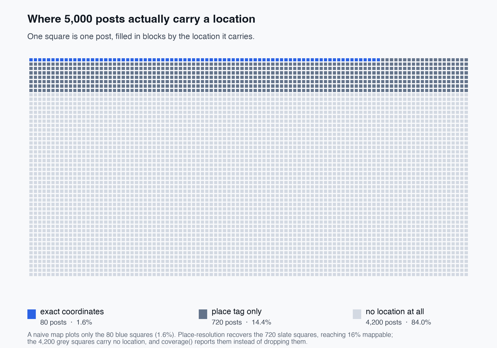
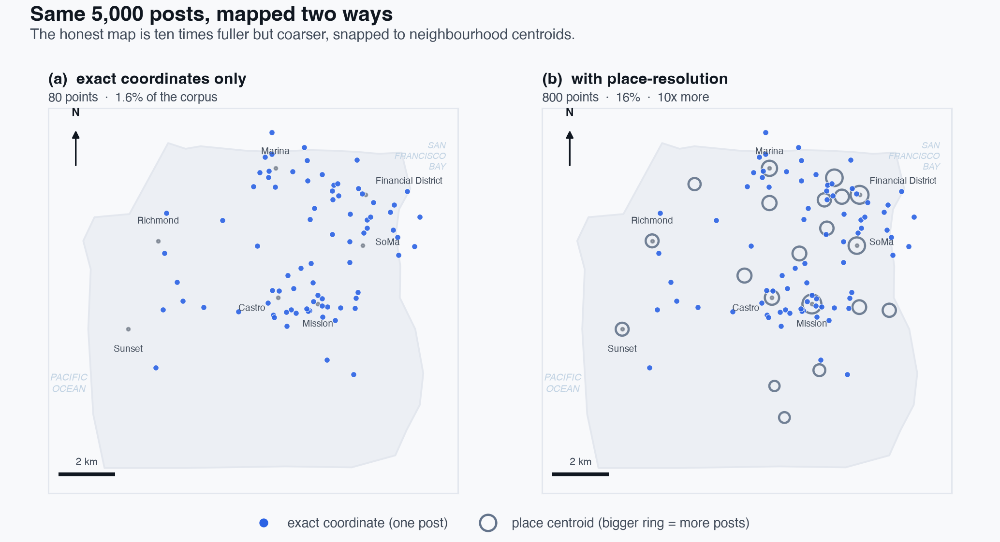

Research Notes
The unmapped majority
Most tools for geotagged social data quietly map the 1-2% of posts that carry exact coordinates and call it “the geography.” Count the coverage first and a different picture appears. This is the idea I built GeoSocialX around, plus a worked example that shows what the naive map hides.
Abstract
Almost every map of “what people are posting about” is really a map of the small self-selected minority who leave their location on, plotted at full confidence while the majority is silently deleted. This note counts coverage before mapping anything: on a seeded pull of 5,000 posts only 1.6% carried an exact coordinate and 84% carried no location at all, and a single coverage() call reports the missing majority instead of discarding it.
Here is the quiet failure mode at the heart of almost every “map of what people are posting about” you have ever seen. You pull some posts, keep the ones that happen to carry a location, drop the rest without comment, plot the survivors, and present the result as if it were the geography of the conversation. It is not. It is the geography of the small, self-selected minority who leave their location on, rendered at full confidence, with the majority silently deleted.
The number that should stop you is how small that minority is. Exact-coordinate geotagging on the Twitter/X API has sat in the low single digits of posts for years, commonly cited at roughly 1-2%.1 A coarser “place” tag (a city, a neighborhood, a venue) is more common but still a minority. So when a dashboard draws a heatmap of “where the discourse is,” it is very often drawing 1-in-50 posts and rounding the confidence up to 100%.
I kept hitting this while building GeoSocialX, a small Python package for the geospatial side of social data. The tempting design is to make the location-carrying records easy to map and say nothing about the rest. I decided the opposite should be the package’s primary job: make the coverage of a corpus a first-class, inspectable output, before anyone draws a single dot.
Count the coverage before you map anything
To show what that changes, I ran the package on a corpus I can describe exactly. It is a synthetic pull of 5,000 posts across San Francisco, generated with a fixed seed and calibrated to the sparsity above: a small fraction with exact coordinates, a modest slice with only a place tag, and the large remainder with no location at all.2 Everything below is the real output of the shipping geosocialx 0.8.0 API on that corpus; the script is linked at the end.
The first call isn’t a map. It’s a census:
# pip install geosocialx
from geosocialx import GeospatialExtractor, GeospatialAnalyzer
ex = GeospatialExtractor()
ex.coverage(tweets)
# {'total': 5000, 'with_point': 80, 'place_only': 720, 'no_geo': 4200}Eighty posts, 1.6%, carry a real coordinate. Another 720 (14.4%) carry only a place tag. And 4,200, 84% of the corpus, carry no location at all. That last number is the one every silent pipeline throws away without ever printing. Here it is a returned value, forced into the open:

coverage(), not silently dropped.Place-resolution: 10× more data, honestly labelled
The 14.4% with a place tag aren’t nothing. A place has a bounding box, and a bounding box has a centroid. GeoSocialX will resolve those place-only posts to their centroid if you pass it the place geometry, and (this is the part that matters) it stamps every resulting point with where it came from: source="exact" or source="place".
# The naive map most tools draw: exact coordinates only.
naive = ex.extract_points(tweets) # 80 points (1.6%)
# Resolve place tags to centroids; each point keeps its source flag.
pts = ex.extract_points(tweets, places=places) # 800 points (16.0%)
GeospatialAnalyzer(pts).summary()
# {'count': 800, 'centroid': (-122.42, 37.78), 'span_km': 14.4, ...}Eighty points became eight hundred, a 10× recovery, and the map goes from “statistically empty” to genuinely usable. But it does not become more precise. It becomes fuller and coarser at the same time, and the source flag is what keeps that trade-off visible instead of laundered.

Notice what the hotspots become. The busiest grid cell holds 110 posts, but it sits on the Mission’s centroid, not on 110 people. Once most of your mapped points are place-derived, your “hotspots” are partly an artifact of where place boundaries were drawn. That is a fine thing to report, and a dangerous thing to imply is precise. The source flag is there so you can filter to "exact" when precision matters, or keep both and say so.
Recovering 16% is not the same as being representative. The people who leave coordinates or check into places are not a random sample. They skew toward events, nightlife, tourism, and the kind of posting that wants to be located. The 84% with no geo aren’t missing at random; they are a different population. Coverage honesty doesn’t fix that selection bias. It just refuses to hide it, which is the precondition for reasoning about it at all.
Why put this in the library instead of the analysis
Because the silent filter is a default, and defaults win. If reporting coverage is a thing you must remember to do by hand, most pipelines won’t, and the ones that skip it look identical to the ones that didn’t need to. Making coverage() the natural first call, and making every point carry its provenance, moves the honest choice from “disciplined analyst remembers” to “falls out of the API.” That is the whole design bet: the tool should make the representative move the easy one.
Bottom line
- Count coverage before you map. On a realistic 5,000-post city pull, 1.6% carried exact coordinates and 84% carried no location. A map of the 1.6% is not a map of the conversation.
- Place-resolution buys 10× the data, not 10× the precision. Resolving place tags to centroids reached 16% coverage here: fuller, coarser, and only honest if each point remembers it’s a centroid, not a person.
- The recovered map is still a sample, not the population. Geotaggers self-select. Reporting the hole doesn’t close it. It just stops you mistaking the visible minority for everyone.
- Make the honest move the default. That’s the point of shipping it as a library:
pip install geosocialx, and coverage is the first thing the tool hands you.
Reproduce this
- Package & source: github.com/JayeshSuryavanshi/GeoSocialX · PyPI · DOI 10.5281/zenodo.21726579
- Every number and both figures above come from the shipping
geosocialx0.8.0 API on one seeded synthetic corpus. The generator and figure script live in the repo’s examples. - Background on geotag sparsity in social data: the computational-social-science literature on Twitter/X geolocation (Graham, Hale & Gaffney; Morstatter et al. on API sampling). The free, open alternative is the AT Protocol
community.lexicon.location.geoschema.